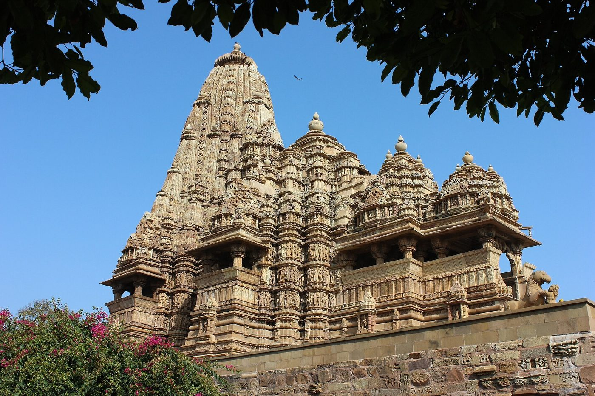
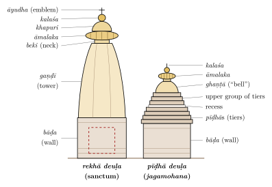
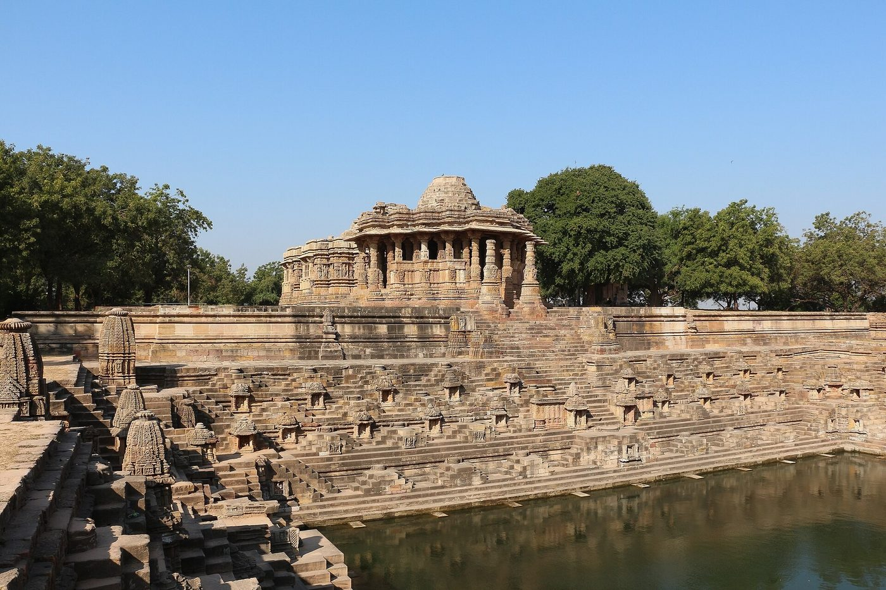
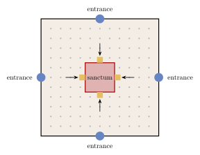
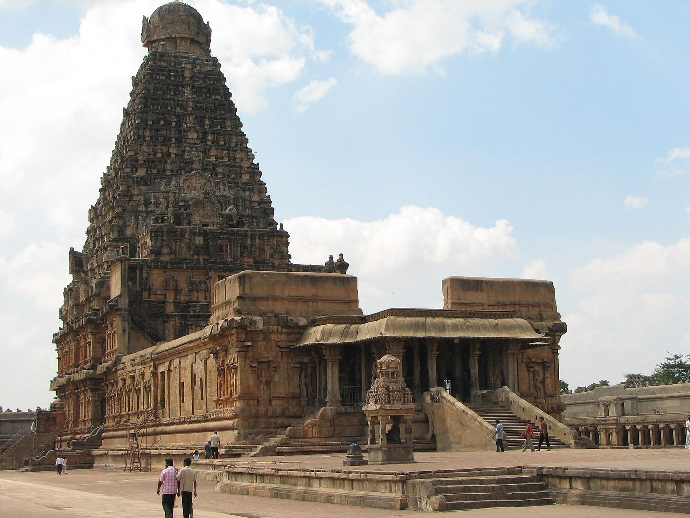

Chapter 5: Great Temples of India: Case Studies¶
The previous chapter described the temple as a type. This one looks at individual temples: Hindu temples from the North, the East, the West and the South; two Jain temple complexes; and the regional traditions of Kerala, Kashmir, the Himalaya, Bengal, the North-east, the Kathmandu valley and Goa. The rock-cut temples of Ellora, Elephanta and Māmallapuram were described in Chapter 3; the mosques, tombs and shrines of the Sultanates and the Mughals have a chapter of their own (Chapter 6), and palaces and the architecture of the colonial and modern periods are treated in Chapter 7. The selection is not exhaustive; it has been chosen to show the range of the temple tradition and to correct some widely repeated errors.
5.1 Early Temples: Deogaṛh and Aihoḷe¶
5.1.1 The Daśāvatāra Temple, Deogaṛh¶
The Viṣṇu temple at Deogaṛh, on the Betwā river in Uttar Pradesh, built in the early 6th century, is one of the finest surviving temples of the Gupta age. It stands on a broad terrace with steps on each side, and originally had small shrines at the corners of the terrace, an early example of the “five-shrined” (pañcāyatana) arrangement. Its square sanctum had a tower, now largely lost. Its doorway, with river goddesses, guardians and bands of carving, and the three great relief panels set into the outer walls, showing Viṣṇu reclining on the serpent, Nara and Nārāyaṇa in meditation, and Viṣṇu rescuing the elephant king (Gajendramokṣa), are masterpieces of Gupta sculpture (Williams 1982).
5.1.2 Aihoḷe¶
Aihoḷe in Karnataka, an early centre of the Cālukyas of Bādāmi, has more than a hundred temples of the 6th to 12th centuries. Among the best known are the Lāḍ Khān temple, a square hall with a pillared porch and a small shrine on its roof, apparently imitating a timber building, once thought to be one of the earliest Indian temples but now usually dated to the late 7th or early 8th century, and the Durgā temple (7th–8th century), an apsidal temple surrounded by a pillared ambulatory and topped by a northern tower. Aihoḷe’s Meguṭi Jain temple bears the famous inscription of Ravikīrti, dated 634–35, a Sanskrit poem in praise of the Cālukya king Pulakeśin II. The variety of experiment at Aihoḷe, Bādāmi and Paṭṭadakal makes the region one of the most important for the early history of the temple (Hardy 1995).
5.2 Khajuraho¶
5.2.1 The Site¶
Khajuraho, in the Chhatarpur district of Madhya Pradesh, was a religious centre of the Candella dynasty. Its temples were built between about 950 and 1050 CE. Local tradition speaks of eighty-five temples; about twenty-five survive, Śaiva, Vaiṣṇava and Jain, in three groups. The site was inscribed as a UNESCO World Heritage Site in 1986. The coexistence at Khajuraho of Hindu temples with Jain temples such as the Pārśvanātha, built in the same style by the same workshops, is characteristic of the period (Desai 1996).
5.2.2 The Kandariyā Mahādeva Temple¶
The Kandariyā Mahādeva temple, dedicated to Śiva and usually dated to c. 1025–1050, is the largest and most elaborate temple at the site. It stands on a high terrace; the temple is about 30 metres long, and its tower rises to a similar height. Its plan is a sequence of spaces on an east–west axis: an entrance porch (ardhamaṇḍapa), a hall (maṇḍapa), a great hall (mahāmaṇḍapa) with lateral balconies, a vestibule (antarāla) and the sanctum, surrounded by an ambulatory with its own balconies. The superstructure is of the Śekharī type: a central spire clustered with smaller half-spires and miniature spires, so that the roofs of the porch and halls rise in a series of peaks to the main tower (Figure 5.1). The walls carry several hundred sculptures, in three registers. The sequence of spaces is that of the type plan of a northern temple with an inner ambulatory (Figure 4.1 in Chapter 4), enlarged by a great hall and by balconies that open the ambulatory and the halls to light and air.


5.2.3 The Sculpture¶
The sculpture of Khajuraho includes images of deities and their attendants, guardians of the directions, celestial women (surasundarī, apsaras), mythical beasts (vyāla), processions, and couples (mithuna), a few of them in explicitly sexual scenes. The sexual sculptures, which have attracted most attention, make up only a small proportion of the total. They have been explained in many ways: as auspicious and protective images, as allusions to Tantric ritual, as illustrations of the pleasures of the world through which the devotee passes towards the sanctum, or as images of the union of the soul with the divine. Devangana Desai has shown that the most explicit groups occupy specific, structurally significant positions on the junction walls between hall and sanctum, and argues that they must be understood within the religious and courtly culture of the time rather than through any single key (Desai 1996).
5.3 The Temples of Odisha¶
The temples of Bhubaneswar, Puri and Konārak form the most continuous regional sequence of Nāgara temples, from the 7th to the 13th century, and they have a vocabulary of their own, known from the Odishan texts and from the usage of the region’s traditional builders (Donaldson 1985; Boner and Rath Śarmā 1966). A temple (deuḷa) is classified by its roof. The sanctum is a rekhā deuḷa, with a curved tower; the hall in front of it, the jagamohana, is a pīḍhā deuḷa, roofed by a stepped pyramid of horizontal tiers (pīḍhā); and the oblong khākharā deuḷa, with a barrel-vaulted roof, is used chiefly for goddess temples, such as the Vaitāl Deuḷ at Bhubaneswar. In both main types the elevation has three parts: the wall (bāḍa), the body of the tower or roof (gaṇḍī) and the crowning members (mastaka) (Figure 5.2). Larger temples add, on the same east–west axis, a dance hall (nāṭamaṇḍira) and a hall for food offerings (bhogamaṇḍapa), which were often built later than the sanctum and its jagamohana.

5.3.1 The Liṅgarāja Temple, Bhubaneswar¶
The Liṅgarāja temple, dedicated to Śiva as Tribhuvaneśvara, the “lord of the three worlds” from whom Bhubaneswar takes its name, was built in the 11th century; its dance hall and hall of offerings were added later. Its rekhā tower, some 45 metres high (published figures range up to 55 metres), is the mature form of the Odishan sanctum, with deeply recessed projections and a massive āmalaka. The temple stands in a large walled enclosure crowded with subsidiary shrines.
5.3.2 The Jagannātha Temple, Puri¶
The temple of Jagannātha at Puri was begun under the Eastern Gaṅga king Anantavarman Coḍagaṅga in the 12th century. Its tower, about 65 metres high, is the tallest in Odisha. The temple houses the wooden images of Jagannātha, Balabhadra and Subhadrā, which are periodically replaced in the navakalevara (“new body”) ceremony; and for the annual chariot festival (rathayātrā) new wooden chariots are built every year. Puri is counted among the four dhāmas, the pilgrimage centres at the four quarters of India.
5.3.3 The Sun Temple, Konārak¶
The Sun temple at Konārak was built by the Eastern Gaṅga king Narasiṃhadeva I around the middle of the 13th century. The whole temple was conceived as the chariot of the Sun: the platform of the sanctum and hall is carved with twenty-four great wheels, about three metres in diameter, and drawn by seven horses. The sanctum tower, which may have been over 60 metres high, collapsed at an unknown date; the hall (jagamohana), about 39 metres high, survives, and was filled with sand and sealed in 1903 to prevent its collapse. The building is mostly of khondalite, with iron beams in the upper parts. Three images of Sūrya in green chlorite stand in niches on the sanctum walls. The separate dance hall, the walls of the platform and the wheels are covered with sculpture of exceptional quality, including many couples. The site was inscribed by UNESCO in 1984.
Popular accounts say that the wheels were accurate sundials, and that the twenty-four wheels stand for the hours of the day or the fortnights of the year. The symbolism of the chariot of the Sun is clear, and a reading of the twelve pairs of wheels as the months or fortnights of the year is plausible; but such readings are modern interpretations, not attested in any source of the period, and the claim that the wheels were designed as precise sundials has not been demonstrated.
5.4 Moḍherā¶
The Sun temple at Moḍherā in north Gujarat was built under the Caulukya (Solaṅkī) king Bhīma I; an inscription dates the sanctum to 1026–27. It is a classic monument of the Māru-Gurjara style. On the east–west axis stand a large stepped tank (kuṇḍa; Figure 5.3, left), with flights of steps and small shrines on its sides; a free-standing, open pillared hall (sabhāmaṇḍapa), probably added somewhat later; and the closed hall (gūḍhamaṇḍapa) and sanctum, which has lost its tower. The pillars, ceilings and walls are carved with deities, including the twelve Ādityas (forms of the Sun), dancers and narrative scenes. The temple faces east, and it is often said that the rising sun at the equinoxes shone directly onto the image; the image is lost, and this tradition has not been confirmed by measurement.


5.5 The Jain Temples of Western India¶
5.5.1 Dilwārā, Mount Abu¶
At Dilwārā on Mount Abu, two Jain temples of white marble are among the finest examples of the Māru-Gurjara style. The Vimala Vasahī, dedicated to Ādinātha, was built in 1031 by Vimala, a minister of the Caulukya king Bhīma I; the Lūṇa Vasahī, dedicated to Neminātha, was built in 1230 by the brothers Vastupāla and Tejapāla, ministers of the Vāghela rulers. Both have a sanctum, a closed hall and an open hall, surrounded by a courtyard lined with cells for further images. Their fame rests on the carving of their ceilings: shallow domes built of concentric rings of corbelled marble, carved into tiers of figures and lotus petals and ending in a pendant at the centre. The workmanship is exceptionally fine, and the marble was cut so thin in places as to be translucent.
5.5.2 Raṇakpur¶
The temple of Ādinātha at Raṇakpur in Rajasthan was begun in 1439 (the date of its principal inscription) by the Jain merchant and minister Dharaṇa Śāh during the reign of Rāṇā Kumbhā of Mewar; the inscription names its architect as Depāka. It is a caturmukha temple: a central sanctum with four images of the tīrthaṅkara facing the four directions, approached through four entrances, and surrounded by halls, courts and subsidiary shrines arranged symmetrically on several levels. The interior is a forest of carved marble pillars, traditionally said to number 1,444, opening into domed halls and light-filled courts (Figures 5.4 and 5.3, right).

5.6 The Temples of Karnataka and Tamil Nadu¶
5.6.1 Paṭṭadakal¶
At Paṭṭadakal, on the Malaprabhā river, the early Cālukya kings and queens built a group of temples in the 7th and 8th centuries in both the northern and the southern manner. The largest, the Virūpākṣa (originally Lokeśvara), was built in the 740s by Queen Lokamahādevī to commemorate the victories of her husband Vikramāditya II over the Pallavas of Kāñcī, and its sister temple, the Mallikārjuna, by Queen Trailokyamahādevī. The Virūpākṣa is a Drāviḍa temple, clearly influenced by the Kailāsanātha at Kāñcīpuram, and is in turn widely considered to have influenced the Kailāsa at Ellora (Section 3.12). The site was inscribed by UNESCO in 1987.
5.6.2 The Kailāsanātha Temple, Kāñcīpuram¶
The Kailāsanātha temple at Kāñcīpuram was built by the Pallava king Narasiṃhavarman II Rājasiṃha (r. c. 690–728). It is one of the earliest major structural temples of the Tamil country, built of sandstone with a granite base, and consists of a sanctum with a tiered superstructure, a hall (later joined to it) and a rectangular courtyard whose walls are lined with small shrines. Its sculpture, much of it restored in stucco, shows Śiva in many forms. Together with the Shore Temple at Māmallapuram it marks the beginning of the mature Drāviḍa temple.
5.6.3 The Shore Temple, Māmallapuram¶
The Shore Temple at Māmallapuram, built under Rājasiṃha in the early 8th century, stands on the edge of the sea, not far from the earlier cave shrines, monolithic rathas and great relief described in Chapter 3 (Section 3.11). It consists of two shrines dedicated to Śiva, one facing east towards the sea and one facing west, with tall, slender tiered superstructures, the eastern one the larger, and between them a small shrine of Viṣṇu reclining, cut from the bedrock. The temple was surrounded by an enclosure wall lined with figures of Nandī. Built of granite, it has been heavily eroded by wind and spray, and has been protected in modern times by a sea wall. The 2004 Indian Ocean tsunami briefly exposed remains of other structures along the shore, and excavations since then have found the remains of an earlier brick temple nearby.
5.6.4 The Bṛhadīśvara Temple, Thanjavur¶
The temple of Śiva built by the Chola king Rājarāja I at Thanjavur, and called after him Rājarājeśvaram, is the largest temple of its age in India. Work began around 1003, and inscriptions record its consecration in 1010, in the twenty-fifth year of the king’s reign (Dehejia 1990). With the later Chola temples at Gaṅgaikoṇḍacōḻapuram and Dārāsuram it forms the UNESCO World Heritage Site of the “Great Living Chola Temples”.
The temple stands in a large rectangular enclosure entered through two gateways. Its vimāna (Figure 5.5) is about 66 metres high. The sanctum, which houses a very large liṅga, is surrounded by a two-storeyed inner ambulatory; on the walls of the lower storey are Chola-period paintings, uncovered in the 1930s beneath later Nāyaka paintings, and in the upper storey the sculptors began a series of the 108 dance poses (karaṇa) of the Nāṭyaśāstra, of which eighty-one were completed. Above rises a pyramidal superstructure of thirteen diminishing storeys, crowned by an octagonal cupola (śikhara) and a copper finial. The great Nandī in its pavilion in front of the temple dates from the Nāyaka period (16th–17th century), not from the Chola foundation.


The temple’s inscriptions are among the most informative documents of medieval South India. They record the king’s gifts of gold, jewels and bronze images, the endowment of villages to support the temple, and the transfer to the temple of four hundred women dancers, who were each allotted a house in two streets near the temple, together with musicians, accountants and other staff. They also name the chief architect, Kuñcaramallaṉ Rājarāja Peruntaccaṉ.
Scholarly Note: Myths about the Bṛhadīśvara Temple
Several claims about this temple, often repeated in guidebooks and on the internet, are untrue or unsupported.
-
“The tower casts no shadow.” It does. Like any tall structure in sunlight, the vimāna casts a shadow on the ground for most of the day throughout the year. Near midday, when the sun is high, the tapering shape of the tower means that much of its shadow falls on its own base and platform, which may be the origin of the story; but the claim that the shadow “never falls on the ground” is false.
-
“The capstone is a single 80-tonne monolith.” The octagonal crowning cupola is often said to be a single granite block weighing about 80 tonnes. This figure is popular lore: no inscription or other early source mentions it, and it does not rest on any published measurement. Writers have described the construction of the cupola in different ways, some as a monolith and others as built up of several stones, and the question could only be settled by a structural survey. What is not in doubt is that a very large mass of stone was raised to a great height.
-
“It was raised up a ramp several kilometres long.” The story that an earthen ramp was built from the village of Cārappaḷḷam (Sarapallam), some kilometres away, is a local tradition for which no inscriptional or archaeological evidence has been published. How the upper courses were raised is not recorded; ramps, earth-and-timber scaffolding and lifting tackle have all been proposed.
-
“It was built without mortar and is therefore earthquake-proof.” The granite blocks are laid largely dry, as in most Indian stone temples, but this does not make a building earthquake-proof (Chapter 4). The region is not one of high seismic activity, and the temple’s survival owes much to its massive construction and to later repairs.
5.6.5 Gaṅgaikoṇḍacōḻapuram and Dārāsuram¶
Rājarāja’s son Rājendra I (r. 1012–1044), after a campaign that reached the Gaṅgā, built a new capital, Gaṅgaikoṇḍacōḻapuram (“the city of the Chola who took the Gaṅgā”), and a great temple of Śiva there, completed around 1035. Its vimāna, somewhat lower than Thanjavur’s, has a graceful concave profile, and its sculpture, including a famous panel of Śiva garlanding the saint Caṇḍeśa, is among the finest of the period. The Airāvateśvara temple at Dārāsuram, built by Rājarāja II in the mid-12th century, is smaller but richly carved, with a hall designed as a chariot with wheels and horses, and narrative friezes of the lives of the Śaiva saints. Together with Thanjavur these temples make up the UNESCO site of the Great Living Chola Temples (Dehejia 1990).
5.6.6 Chidambaram and Śrīraṅgam¶
The temple of Naṭarāja at Chidambaram, the principal centre of the cult of Śiva as Lord of Dance, grew from a small shrine with a gilded roof into a vast complex with four great gateways, mostly of the 12th and 13th centuries (the northern one was completed under Vijayanagara in the 16th), in whose passages, notably that of the eastern gateway, are carved the 108 dance poses (karaṇa) of the Nāṭyaśāstra (on which see Volume 9, Saṅgīta–Nāṭya). The temple of Raṅganātha at Śrīraṅgam, on an island in the Kāverī near Tiruchirappalli, is the principal Śrīvaiṣṇava temple; its seven concentric enclosures, the outer ones containing the streets of the town, make it one of the largest temple complexes in India (Chapter 8). Both temples were built up over many centuries by successive dynasties, and both remain centres of worship.
5.6.7 The Mīnākṣī–Sundareśvara Temple, Madurai¶
The twin temple of Mīnākṣī and Sundareśvara (Śiva) at Madurai is an ancient foundation, but its present form is largely the work of the Nāyaka rulers of Madurai in the 16th and 17th centuries, especially Tirumala Nāyaka (r. 1623–1659). It covers about six hectares and is entered through a series of gateways, fourteen in all; the tallest, the southern gateway, is about 52 metres high. The gopuras are covered with brightly painted stucco figures of deities and mythical beings, which are restored and repainted before each consecration. Within the enclosures are the Tank of the Golden Lotus (Poṟṟāmaraik kuḷam), the hall of a thousand pillars (built in 1569; it has in fact just under a thousand), long pillared corridors, and many subsidiary shrines. Outside the temple, the streets of the old city form concentric rectangles around it and are named after the Tamil months in which festival processions pass along them, making Madurai an example of a city organised around a temple (Chapter 8).
5.6.8 The Hoysaḷa Temples: Belūr, Haḷebīḍ and Somanāthapura¶
The Hoysaḷa kings of southern Karnataka (12th–14th century) built some of the most richly decorated temples in India. The Cennakeśava temple at Belūr was begun in 1117 by King Viṣṇuvardhana, traditionally to mark a victory over the Cholas; it stands in a walled court with a later gopura, and is famous for the bracket figures of celestial women that support the eaves of its hall. The Hoysaḷeśvara temple at Haḷebīḍ (Dvārasamudra, the Hoysaḷa capital), begun about 1121, is a double temple with two sanctums side by side; its outer walls carry a continuous series of friezes, one above the other, of elephants, lions, horsemen, scrolls, narrative scenes from the epics and Purāṇas, and mythical beasts, below a row of large images of deities. It was never completed, and its superstructures are lost. The Keśava temple at Somanāthapura (1268), built by a general of Narasiṃha III, is a triple temple with three stellate sanctums raised on a platform within a cloistered court, and is the best preserved of the group. All three are built of chloritic schist and are discussed further in Chapters 4 and 13 (Hardy 1995).
5.6.9 Vijayanagara: The Virūpākṣa and Viṭṭhala Temples¶
At Vijayanagara (Hampi), the Virūpākṣa temple, an ancient shrine of the local goddess Pampā and her consort, was greatly enlarged by the Vijayanagara kings, with long courts, pillared halls and a great eastern gopura; it remains in worship. The Viṭṭhala temple, begun in the 15th century and enlarged in the 16th, is the most ornate of the city’s temples. Its halls are supported by composite pillars carved as clusters of colonnettes and rearing beasts, some of which give a ringing sound when struck; in its court stands a small shrine for Garuḍa built in the form of a stone chariot with carved wheels. The temple complexes of the city, each with a long bazaar street leading from its gateway, show how temple, market and procession were integrated in a late medieval South Indian city. The plan of the city is described in Chapter 8 (Section 8.7), its courtly buildings in the arched and domed manner of the Deccan sultanates in Chapter 6, and its canals and tanks in Chapter 9 (Fritz and Michell 1991; Michell 1995).
5.7 Other Regional Traditions¶
5.7.1 Kerala Temples¶
The temples of Kerala form a distinct southern tradition. A typical temple consists of a sanctum (śrīkōvil), which may be square, circular, oblong or apsidal, standing within a cloistered enclosure (nālambalam); in front of it is a pillared pavilion (namaskāra maṇḍapam), and outside the enclosure a tall flagstaff, a hall for temple theatre (kūttambalam) and a tank. The walls are of laterite or stone, often plastered and painted with murals, and the steep roofs, covered with tiles or copper sheets, rest on elaborately carved timber structures. The Vaḍakkunnāthan temple at Thrissur, with its great walled precinct and its kūttambalam, the Padmanābhasvāmi temple at Thiruvananthapuram, with a granite gopura in the Tamil manner, and many smaller village temples show the range of the tradition.
5.7.2 Kashmir: Mārtaṇḍ¶
The temple of the Sun at Mārtaṇḍ, on a plateau near Anantnag in Kashmir, was built by King Lalitāditya Muktāpīḍa in the 8th century. Now ruined, it stood in a large court surrounded by a colonnade of cells, and its sanctum, hall and gateway were built of large blocks of limestone, with pyramidal roofs, trefoil arches and triangular pediments, and fluted pillars that recall the classical architecture of the north-west. It is the grandest example of a regional tradition of stone temples that flourished in Kashmir between the 8th and 12th centuries.
5.7.3 The Western Himalaya¶
South and east of Kashmir, in the hills of present-day Himachal Pradesh and Uttarakhand, two building traditions met. The first is the stone Nāgara temple of the plains, carried into the hills from about the 8th century. The rock-cut temples of Masrūr in the Kangra valley, a group of shrines carved out of a sandstone ridge, are usually dated to the 8th century; the Śiva temple of Baijnāth, also in Kangra, carries inscriptions of the early 13th century; and at Jāgeśvar near Almora more than a hundred small stone shrines, most of them of the 9th to 13th centuries, cluster in a deodar forest round the principal temples. At Chamba, the Lakṣmīnārāyaṇa group of stone Nāgara temples was given sloping wooden canopies to protect the towers from snow, a local adaptation of the northern form.
The second tradition is of timber. In the higher valleys, where deodar is plentiful and snow heavy, temples were built with walls of kāṭh-kuṇī construction, alternating courses of timber beams and dry stone (Chapter 10), and with roofs of slate or wooden shingles. Some, like the temple of Lakṣaṇā Devī at Brahmaur, preserve carved wooden façades and doorways of great age behind plain exteriors; others, such as the temple of Hiḍimbā Devī at Manali (1553), have tiered, pagoda-like roofs of diminishing size over a sanctum built round a rock; and others again, such as the Bhīmakālī temple at Sarāhan, rise as tall tower-like buildings with projecting wooden galleries under overhanging roofs. These temples belong to village and clan deities as much as to the gods of the Purāṇas, and many are the seats of deities who travel in palanquins to visit one another at festivals, as at the Dasahrā of Kullu. Their builders were local carpenters and masons, and their forms owe little to the vāstu texts; they have more in common with the timber architecture of Nepal, Kashmir and the Himalayan Buddhist monasteries (Chapter 3) than with the temples of the plains.
5.7.4 Bengal: Brick Temples¶
In the delta of Bengal, where stone is scarce, temples of the 16th to 19th centuries were built of brick and covered with terracotta. Their forms imitate the curved thatched roofs of village huts: the ek-bāṅglā with a single curved roof; the jor-bāṅglā, two such roofs joined side by side, as in the Jor Bāṅglā temple at Viṣṇupur (1655); the cālā types with four or eight curved roof slopes; and the ratna (“jewel”) types crowned by one, five or more pinnacles, such as the five-pinnacled Śyām Rāy temple at Viṣṇupur (1643). Pika Ghosh has shown how the Malla kings of Viṣṇupur used these forms, and the devotion to Kṛṣṇa that their terracotta programmes celebrate, to fashion a royal and religious identity in the 17th century (Ghosh 2005). Their terracotta decoration is discussed in Chapter 13. The curved cornice of the Bengali hut was also adopted in Bengal’s Sultanate mosques and, later, in Mughal pavilions in northern India.
5.7.5 The North-east¶
In Assam, the temple of Kāmākhyā near Guwahati, one of the most important centres of goddess worship, was rebuilt in the 16th and 17th centuries under the Koch and Ahom kings, combining a stone base with a superstructure of brick in a local form. The Ahom kings also built brick temples, palaces and tanks at Sibsagar (Sivasāgar) in the 18th century, and the Manipuri and Tripuri traditions have their own temple forms.
5.7.6 Nepal: The Kathmandu Valley¶
The Kathmandu valley, whose Newar craftsmen cast images and painted manuscripts for patrons across the Himalaya (Chapters 11 and 14), has a temple architecture of its own, preserved in the royal squares (darbār) of its three old cities, Kathmandu, Patan (Lalitpur) and Bhaktapur, and in hundreds of smaller shrines (Slusser 1982). Its characteristic form is the multi-roofed temple, often called a “pagoda” temple: a square brick sanctum on a stepped plinth, often surrounded by a pillared ambulatory, and covered by two, three or five diminishing roofs of tiles or gilded copper, carried on carved timber struts that slope outward from the walls. Struts, windows and doorways are densely carved with deities and attendants. The five-roofed Nyatapola temple at Bhaktapur, built in 1702 under King Bhūpatīndra Malla on a five-stage plinth whose stairway is flanked by guardian figures, is the tallest. Alongside this tradition of timber and brick, the Malla kings also built stone temples in the Nāgara manner, such as the Kṛṣṇa Mandir in Patan Darbār Square (1637), whose central spire is surrounded by tiers of open pavilions.
The Buddhist monasteries of the valley are courtyard buildings. A bāhāḥ is a square court surrounded by two-storeyed ranges of rooms, with the shrine of the principal image opposite the entrance, often under a roof of the multi-roofed type, as at the Kwā Bāhāḥ (the “Golden Temple”) in Patan. The great stūpas of Svayambhūnāth and Boudhanāth are mentioned in Chapter 3. The monuments of the valley were inscribed on the UNESCO World Heritage List in 1979; the earthquake of 2015 brought down or damaged many buildings of the royal squares, and their rebuilding with traditional craftsmen and materials has renewed interest in the timber construction of the valley. Newar architecture, like the timber temples of the western Himalaya, is best understood as a regional tradition in close contact with India rather than as a provincial copy of the temples of the plains.
5.7.7 Goa¶
The temples of Goa show a regional tradition shaped by colonial rule. In the 16th century, after the Portuguese had prohibited Hindu worship in the territories they then held and destroyed many temples there, the images of several important deities were carried to villages beyond Portuguese control, especially around Ponda, and new temples were built for them. Most of the buildings now standing date from the 18th and 19th centuries. The temples of Śrī Maṅgeś at Priol and Śrī Śāntādurgā at Kavaḷe are typical: a sanctum crowned not by a Nāgara tower but by a dome on an octagonal drum, a large hall with arched windows, pilasters and balustrades of European inspiration, chandeliers and painted ceilings, and in front a tall lamp tower (dīpastambha) of several storeys, lit at festivals, beside a stepped tank. These buildings combine the plan and ritual of the Konkan temple with the domes of the Deccan and the decorative vocabulary of the Goan churches, and they are a reminder that the architecture of a temple was not fixed by the texts but responded to the history of its region.
5.8 Somnāth¶
The temple of Śiva as Somanātha at Prabhās Pāṭan on the coast of Saurashtra is counted first among the twelve jyotirliṅgas. The temple that stood there was sacked by Maḥmūd of Ghazni in 1026, rebuilt, notably under the Caulukya king Kumārapāla in the 12th century, and attacked again later. Its history has been told in very different ways: in Persian chronicles as a triumph of Islam, in Sanskrit inscriptions as a story of restoration, and in modern nationalist writing as a symbol of the suffering and survival of Hindu India. Romila Thapar’s study of these “many voices” shows how the memory of the event has been shaped by later concerns (Thapar 2004).
The present temple, consecrated in 1951, was built on the initiative of Vallabhbhai Patel and K. M. Munshi to designs by Prabhashankar Sompura, of the hereditary Sompurā family of temple architects, in the Māru-Gurjara manner of the Caulukya period. It is an important example of modern temple building in a traditional style.
5.9 What the Case Studies Show¶
Set side by side, these temples show how little of their history can be read from the vāstu texts alone. The Kandariyā and the Liṅgarāja, the Virūpākṣa at Paṭṭadakal and the Bṛhadīśvara were built within the rules of their regional traditions, but what made each of them distinctive, its scale, its sculpture, its place in a royal or sectarian programme, was decided by patrons and workshops, and is recorded, when it is recorded at all, in inscriptions rather than in treatises. The same workshops carved Hindu and Jain temples at Khajuraho and in Gujarat, and the masons of Gujarat went on to build its mosques (Chapter 6). And the claims that guidebooks make about these buildings, from the shadowless tower of Thanjavur to the sundials of Konārak and the equinoctial sunrise at Moḍherā, turn out on examination to be modern stories; the buildings and their inscriptions are more interesting than the myths.
Further Reading¶
-
Desai, Devangana. 1996. The Religious Imagery of Khajuraho. Franco-Indian Research.
-
Dehejia, Vidya. 1990. Art of the Imperial Cholas. Columbia University Press.
-
Thapar, Romila. 2004. Somanatha: The Many Voices of a History. Viking.